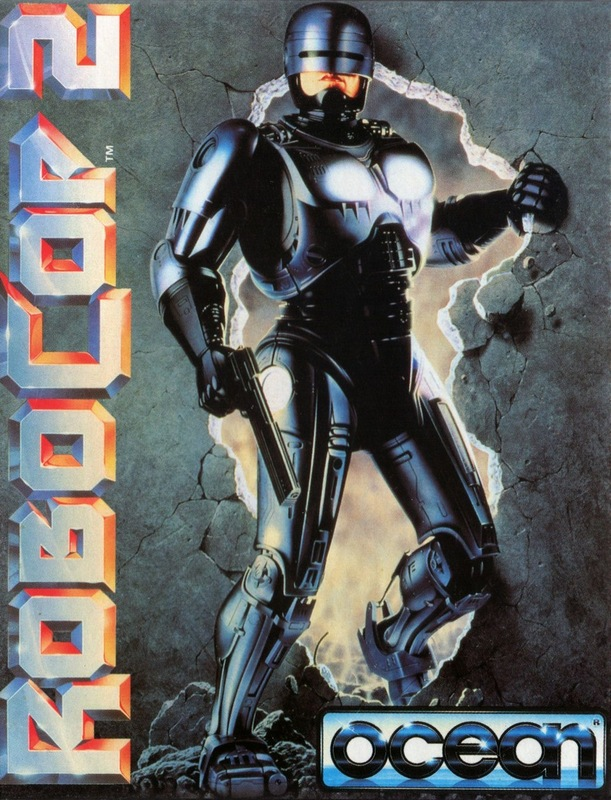
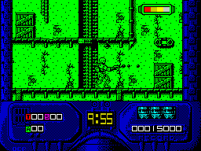

RoboCop 2


{kind=link}

| Publisher: | Ocean |
| Price: | £10.99 / £15.99 |
| Year: | 1990 |
| Source: | CRASH, Issue 84 |

The sequel to the biggest selling Speccy game of all time had to be good, didn’t it? Ocean wouldn’t have lived down a dud. And here it is, and it’s fab!
The first striking thing are the graphics — all really well designed and detailed. Animation’s great too: there’s always lots happening on-screen and RoboCop stomps about like he means business (which, of course, he does). The second striking thing is how tough the game is: gameplay’s much more than just a combat blasting affair, there’s a lot of brain work involved too.
The action begins at the River Rouge Drugs Laboratory, which basically looks like a falling-down warehouse. The detailed backdrops do a smooth eight-way scroll as Robo moves around — he can stomp left right, jump up and crouch.
There’s no time allowed for practice: opponents rush in immediately, so grab your gun and blast (you can fire left, right, up and at different angles with a variety of collectable weapons). The guards are armed with everything from handguns to missile launchers, and being hit knocks down Robo’s energy level. If it sinks to zero you can wave cheerio to a life. Funnily enough, dying outright can be put off for a long time: you’re awarded continue-plays for doing particularly well in a level and falling icons, if shot, boost power reserves and time limit. But try and avoid collecting the minus icons as they deplete power.
Running away from the bad guys isn’t any use as crates halt Robo’s progress and have to be punched to pieces. Mapping is essential as the game insists on you knowing a good route, which includes leaping on moving conveyor belts, jumping onto platforms and all sorts of tricky manoeuvres — not just running around blasting.

To help Robo around there are lifts, doors and, if you can find them, insecure walls to be smashed giving you entrance into another part of the warehouse. That’s about it for level one. Level two is completely different, it’s a puzzle game. You’re looking at a load of chips in a memory bank and the task is to move a cursor around collecting the white chips in four banks to help Robo remember his human identity. Sounds easy enough. The problem is that as you move the cursor the area behind it fades away and you can’t go over the empty space. Also, red chips are lethal: avoid.
Another style of gameplay for level three — a shooting gallery where Robo has one minute to shoot enemy targets. You control the cross hairs with the help of a targeting device to let you know when to fire.
Level four is like level one — a warehouse brewery where Robo stomps around shooting opponents and negotiating platforms. The playing area isn’t very wide, but it’s very, very tall. And be careful not to fall as there are a few lethal beer vats around. You can get over the tanks by grabbing hold of a moving hook, but be quick or Robo’s weight will send him to a happy death. Another danger is droplets of beer which make Robo drunk, reversing his controls! It’s a bit hellish to complete level four as there are lots of hidden doors and you’re playing against the clock.
Levels five and six are more tricky repeats of two and three; get 50% success rating in level six’s shooting gallery and an extra life is awarded!
Level seven is another stomp-around-and-shoot level, set in the posh office of the Civic Centrum. Billions of human enemies and security droids belt along the floors. There are mini ED-209s and little robots that can be kicked out of the way. The playing area is massive and interconnected with security locked doors. To unlock them you have to solve a numeric password puzzle. Like, complete the sequence: 2,4.6,?. Ha! Ha! Easy! It’s 8. What about 28,14.7,? ? Erm...
The game is completed after finding the back door to the Civic Centrum (difficult) and defeating the huge, mean Robocop Mark 2: a cross between RoboCop and a Zoid (remember them?). This is really difficult and I can’t do it. Sob.
And that’s it! Phew! Wotta game: the programmers have packed so much into the varied styles of gameplay it’s one of the few games actually worth the asking price! It’s tricky to play at first but you’ll soon get the hang of it. Presentation is absolutely superb — there are objective and status reports after each level and a few digitised scenes from the movie all with great music. The only aggravating bit is, when you die, you return to the start of the level or the last door you walked through. Apart from that, RoboCop 2 is fast, furious, addictive and a hell of a lot of fun to play! Essential Christmas prezzie stuff!!
RICHARD — 93%
I must be one of the only people in the country not to have seen the movie yet, but RoboCop 2 the game is ace. The RoboCop sprite is as much of a mean mutha as in the original. The game is full of neat little graphic bits ’n’ bobs, most of these in the backdrops though the character sprites are no slouches. What struck me though is how much tougher this is compared to RoboCop. An itchy trigger finger is essential because attacks come from all sides, and you’ll be hard praised to get past level one on your first few attempts. In short: a worthy successor to one of the best Spectrum games around.
MARK — 93%
RATING
A tough and mean sequel to the blockbusting classic!
| Presentation: | 94% |
| Graphics: | 93% |
| Sound: | 91% |
| Playability: | 91% |
| Addictivity: | 94% |
| Overall: | 93% |